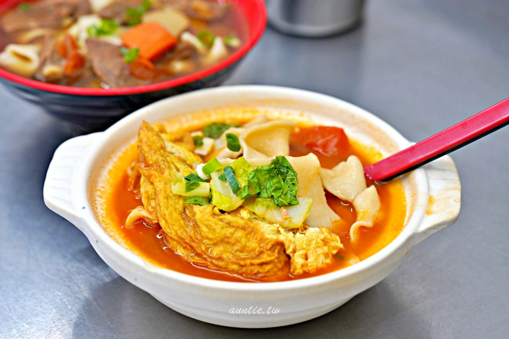

河南砂鍋手工扯麵
google評價：4.1★
店家資訊
地址：新北市三峽區光明路26號
營業時間：中午10:30至晚上8:30，星期四休息
店家電話：02-2671-2067

推薦菜單
清燉番茄牛肉麵(冬粉/米粉/扯麵) 大120元小100元
紅燒牛肉麵(冬粉/米粉/扯麵) 大120元小100元
番茄蛋麵(冬粉/米粉/扯麵) 大80元小60元
榨菜肉絲麵(冬粉/米粉/扯麵) 大60元小40元
小菜:
豆干20元 海帶20元 素雞10元 滷蛋10元
皮蛋豆腐40元 地瓜葉30元
顧客評論
首先有最基本的黑白切，包括豆干、海帶、陸但、素雞、皮蛋豆腐等等，而麵條有分扯麵、冬粉、細麵。店內的招牌是番茄扯麵，湯頭非常濃郁，可以吃到濃濃的番茄味，扯麵很Q彈有勁，跟一般的寬麵不太一樣，不會因為麵是寬大而失去麵體的嚼勁 ，砂鍋裡有軟軟厚厚的蛋包，和番茄湯很對味，蛋包還吸滿湯汁，酸酸甜甜。